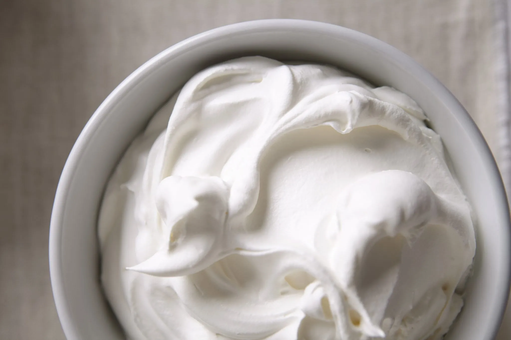

Whipped Cream

Description
This whipped cream recipe has only 4 ingredients in it:
Heavy cream, maple syrup, vanilla extract and a pinch of salt.
No additional flavors, sweeteners, or other difficult-to
read ingredients to preserve it.
Now, the maple whipped cream recipe below makes 2 cups
of whipped cream, but if you need less than that feel
free to halve the ingredients. The whipping time will
not change. Need more? Double it.
It keeps well in the fridge up to two days as long as
it is placed in an airtight container.
Ingredients
Yield: 2 cups
- 1 cup heavy cream
- 2 tablespoons maple syrup
- ½ teaspoon vanilla extract, or ½ vanilla bean (seeds scraped)
- ⅛ teaspoon kosher salt
Steps
- Attach the whisk attachment to a standing mixer. Alternatively,
you can whip it by hand (or with a handheld mixer). If you do
so, it might take a few minutes longer.
- Add all the ingredients into the bowl.Whisk in medium-low
speed until foamy, about 1 minute. Increase the speed to
high and whip until soft peaks form, 1-2 minutes.
Recipe Source